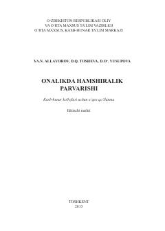

OHOnalikda hamshiralik parvarishi asoslari va ginekologik bemorlarni parvarishlash bo'yicha o'quv qo'llanma.
Ushbu o‘quv qo‘llanmada homiladorlik, tug‘ruq, chilla va chaqaloqlik davrlarida hamshiralik parvarishi hamda ginekologik bemorlar parvarishining o‘ziga xos xususiyatlari yoritilgan. Adabiyotda ifodali rasmlar, tayanch so‘z va iboralar, nazorat hamda test savollari keltirilgan. Qo‘llanma tibbiyot kollejlari va o‘quv yurtlari talabalari uchun mo‘ljallangan.